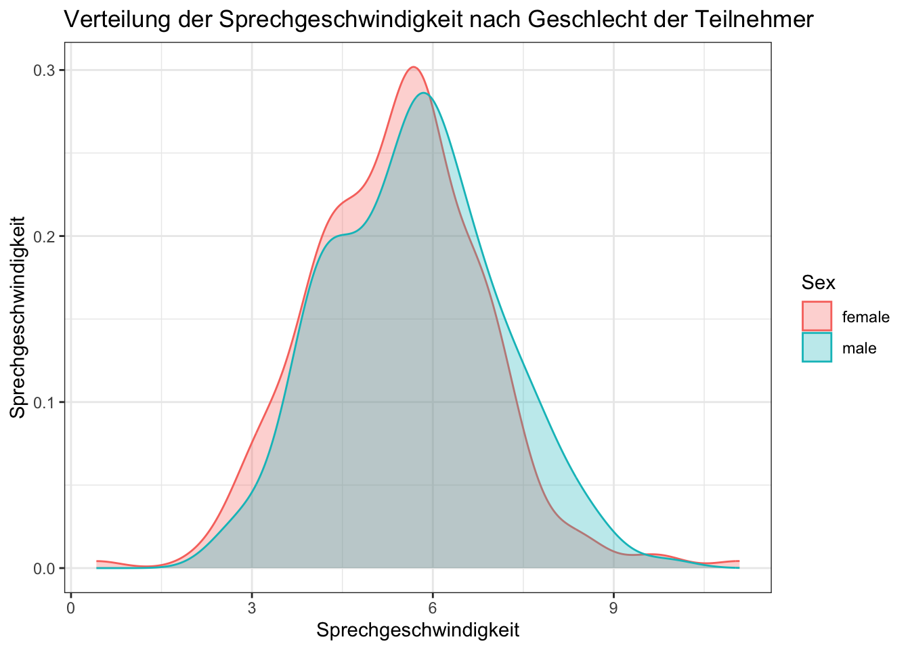

| Variable | Description |
|---|---|
| Word | a factor with the words as levels |
| Frequency | a numeric vector with the word’s absolute frequency in the Spoken Dutch Corpus |
| Speaker | a factor with the speakers as levels |
| Sex | a factor with levels female and male, this information is missing for one speaker |
| YearOfBirth | a numeric vector with years of birth |
| DurationOfPrefix | a numeric vector with the duration of the prefix -ge in seconds. |
| SpeechRate | a numeric vector coding speech rate in number of syllables per second |
| NumberSegmentsOnset | a numeric vector for the number of segments in the onset of the stem |
Bericht 1
1 Description
This report is designed to review and consoldiation what you have already learned up until now. Your tasks entail loading packages and data, as well as doing some light data wrangling (Kapitel 3). You will also produce 4 plots (Kapitel 4), and write a short interpretation of one of them (Kapitel 5).
A tip: I recommend rendering your document often in order to catch any errors early.
You only need to submit the Quarto script, which should render on my machine (if it renders on yours, it should render on mine).
2 Set-up
2.1 Quarto
Open a new Quarto script and save it as nachname_vorname_bericht1.qmd. Change the YAML so that it has:
- a meaninful title
- your name as
author - a table of contents
Make sure to use code chunks, prose, and headers in order to appropriately document your tasks. A good rule of thumb is to add a header for each (sub)header in this document.
2.2 Packages
Load in the packages tidyverse, patchwork, and languageR.
2.3 Data
The dataset durationsGe from the languageR package [@languageR-package] contains durational measurements on the Dutch prefix ge. A description of all the variables in the dataset is given in Tabelle 1. Your task is to:
- Save the dataset as an object
df_gein your Environment (this can be done the same way as all datasets we’ve used before) - Print the first 10 rows of the dataset using the
head()function.
3 Data wrangling
Here you will be using dplyr verbs from week 4. Remember, you need to use the assignment operator (<-) only when you want to store the changes you are making as an object the Environment. If you only want to print these changes, you do not need the assignment operator.
3.1 Subsetting
Print (but do not save in your environment) the rows of df_ge where SpeechRate is above 9, with only the columns word, speaker, and SpeechRate. There should be 5 rows.
3.2 mutate()
Add a new variable, duration_ms, which equals DurationOfPrefix multiplied by 1000 (DurationOfPrefix*1000). This will correspond to the duration of ge in milliseconds, instead of seconds. Make sure you save this new variable in your dataframe (Hint: you will need to use the assignment operator <-, and the dplyr verb mutate()).
3.3 Troubleshooting
Why does this code chunk not run? There are two problems with the code, identify and fix them.
# Troubleshooting
df_ge |>
select(Frequency, word) +
filter(YearOfBirth == 1978)4 Data visualisation
For all plots, use labs(title = "...") to add appropriate plot titles.
Optional: Change the x and y axis labels if you like using labs(x = "...", y = "..."). You may also prefer to add a theme (e.g., theme_minimal()).
4.1 Bar plot
Produce a barplot of the observations per NumberSegmentsOnset (x-axis), per Sex (colour). Use the argument position = "dodge" in the bar geom.
4.2 Scatterplot
Produce a scatterplot with SpeechRate (x-axis) and DurationOfPrefix (y-axis). Change the code chunk settings so that the plot is not printed when the script is rendered, but the code is. Hint: you’ll need to use #| eval:.
4.3 Facets
Add facets for Sex (remember to include the tilde ~). Change the code chunk settings so that the plot is printed when the script is rendered, but the code is not (you’ll need echo instead of eval).
4.4 Reproduce a plot
Reproduce the Abbildung 1 (it does not need to be an exact replica, but get as close as you can). Make sure the code and the plot are both printed when rendering. Hint: you will need to use filter() for both Frequency and Sex. I would focus on producing the plot first, and then trying to filter the data.

5 Interpretation
Describe the relationship between x and y that you see in Abbildung 1.